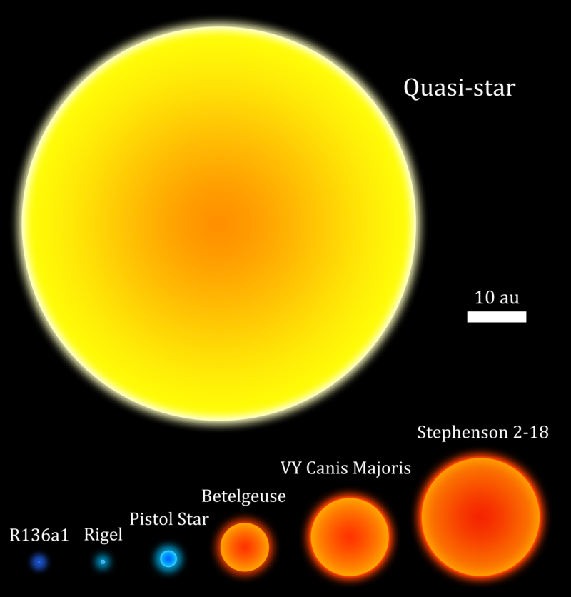

Quasistars - mysterious cosmic giants
What are quasi stars?
Quasi stars, also known as quasistars, are extraordinary astronomical objects whose existence has been postulated by scientists. They are theoretical intermediaries between stellar giants and black holes. Quasi stars are formed when massive amounts of matter accumulate around a gravitationally growing protostar, creating immense pressure and temperatures. Their brightness is so tremendous that it exceeds the brightness of entire galaxies. Although quasi stars have not been directly observed yet, their existence is widely accepted among astronomers and represents a fascinating area of space research.
How do they form?
The formation of quasi stars is a theoretical scenario that assumes a rapid mass increase during the initial phase of evolution of very massive stars, with masses exceeding 100 times that of the Sun. The accumulation of matter around the protostar leads to the creation of tremendous pressure and temperatures that surpass the limits of thermonuclear stability. This unusual process is referred to as "supermassive accretion." As a result, an extremely bright source of light is formed, surpassing the brightness of ordinary stars and even entire galaxies. Quasi stars, therefore, serve as intermediaries between a star and a black hole, with immense mass and intense energy emission. However, direct observations of quasi stars are currently lacking, and their existence is based on theoretical models and inferences drawn from observations of similar objects.
